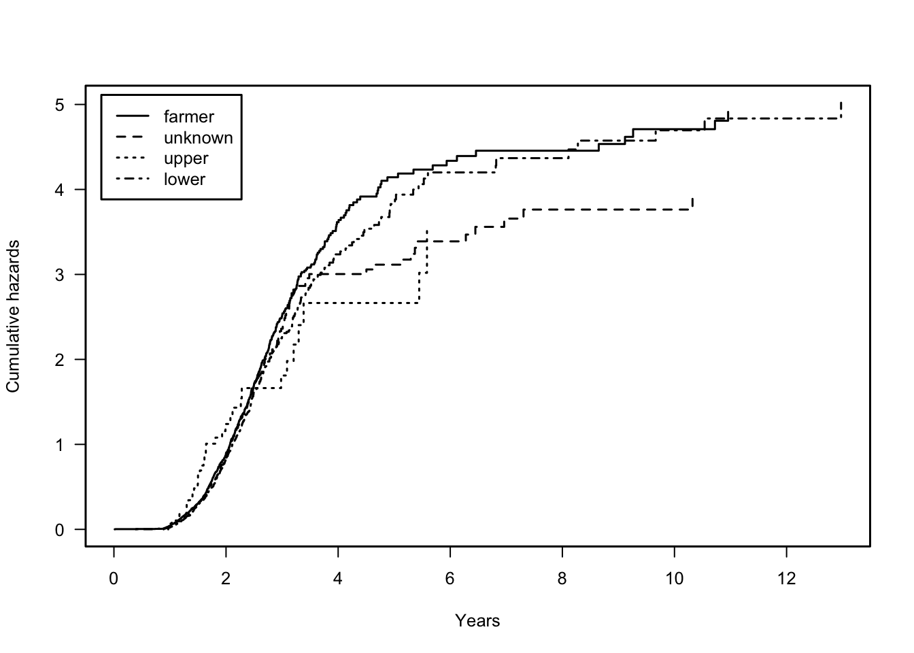
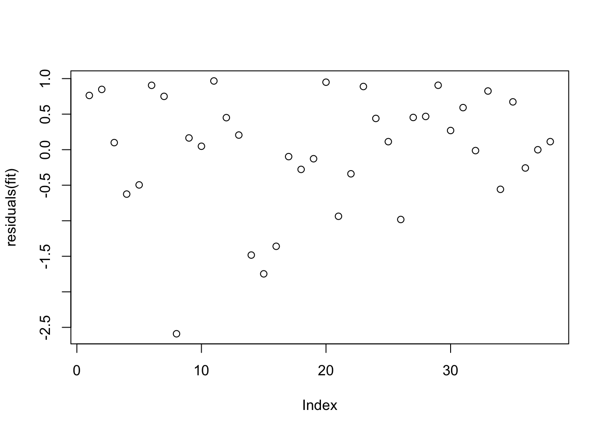
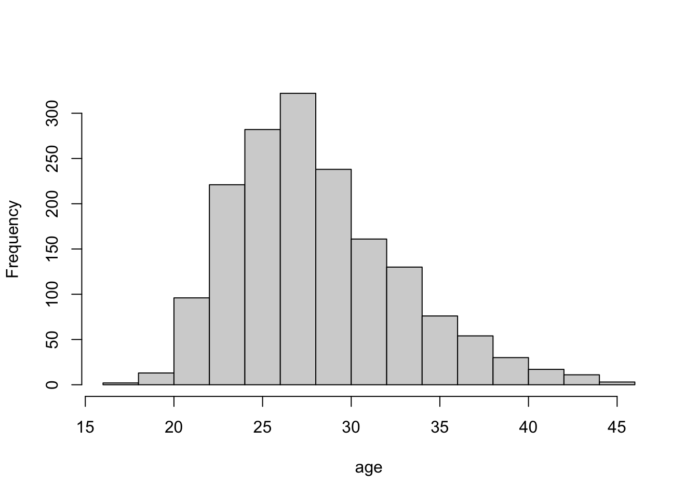
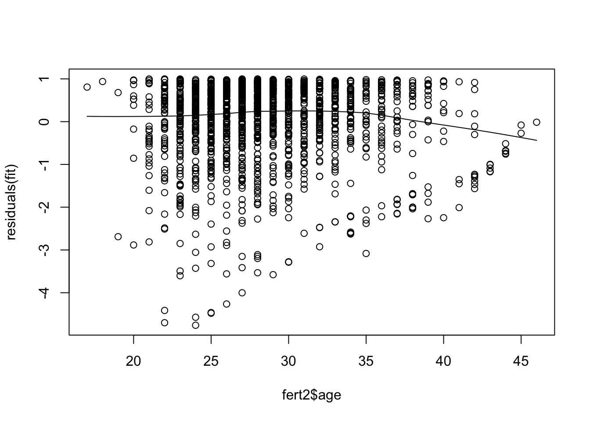

library(eha)
fert1 <- fert[fert$parity == 1, ]
levels(fert1$parish) <- c("Jorn", "Norsjo", "Skelleftea")
fert1$parish <- relevel(fert1$parish, ref = "Skelleftea")
fit <- coxreg(Surv(next.ivl, event) ~ strata(ses) + I(age - 25) + I(year-1860) + prev.ivl + parish, data = fert1)chapter 6 more on cox regression
1 Stratification
??test for proportionality assumption
par(lwd=1.5, cex=0.8)
plot(fit, ylab = "Cumulative hazards", xlab = "Years")
2 Sampling of Risk Sets
fit <- coxreg(Surv(enter, exit, event) ~ ses, data = mort)
fit.4 <- coxreg(Surv(enter, exit, event) ~ ses, data = mort, max.survs = 4)
f1 <- coefficients(summary(fit))[c(1, 3)]
f4 <- coefficients(summary(fit.4))[c(1, 3)]
out <- rbind(f1, f4)
colnames(out) <- c("Coef", "se(Coef)")
rownames(out) <- c("Original", "Sample")
round(out, 4) Coef se(Coef)
Original -0.4795 0.1207
Sample -0.4441 0.13613 Residuals
library(survival)
head(kidney) id time status age sex disease frail
1 1 8 1 28 1 Other 2.3
2 1 16 1 28 1 Other 2.3
3 2 23 1 48 2 GN 1.9
4 2 13 0 48 2 GN 1.9
5 3 22 1 32 1 Other 1.2
6 3 28 1 32 1 Other 1.2kl <- kidney[!duplicated(kidney$id), ]
fit <- coxreg(Surv(time, status) ~ disease + age + sex, data = kl)
plot(residuals(fit))
4 checking model assumptions
4.1 Proportionality
library(eha)
fert2 <- fert[fert$parity == 2, ]
fit <- survival::coxph(Surv(next.ivl, event) ~ ses + age + year + parish, data = fert2)
prop.full <- survival::cox.zph(fit)
prop.full chisq df p
ses 9.76 3 0.0207
age 7.14 1 0.0075
year 2.34 1 0.1259
parish 1.39 2 0.4984
GLOBAL 18.73 7 0.0091fit1 <- coxph(Surv(next.ivl, event) ~ strata(ses) + age + year + parish, data = fert2)
prop.full <- survival::cox.zph(fit1)
prop.full chisq df p
age 7.85 1 0.0051
year 1.61 1 0.2045
parish 1.47 2 0.4793
GLOBAL 9.19 4 0.0564So the age variable does not conform to the proportionality constraint. Let check its distribution and try to categorise it.
hist(fert2$age, main="", xlab="age")
fert2$qage <- cut(fert2$age, 4)
fit2 <- coxph(Surv(next.ivl, event) ~ strata(ses) + qage + year + parish, data = fert2)
fit2.zph <- survival::cox.zph(fit2)
fit2.zph chisq df p
qage 7.589 3 0.055
year 0.758 1 0.384
parish 1.052 2 0.591
GLOBAL 8.536 6 0.2014.2 log-linearity
plot(fert2$age, residuals(fit))
lines(lowess(fert2$age, residuals(fit)))
5 Fixed Study Period Survival
Basically what we do in financial risk modelling is a fixed study period survival analysis. The behavioural period is the fixed observational period.
6 The Weird Bootstrap
This bootstrap took too long time to run. So I commented it out.
# fit <- coxreg(Surv(enter, exit, event) ~ sex, boot=300, data = child)
# b_hat <- fit$coefficients[1]
# b_se <- sqrt(fit$var[1, 1])
# b_sample <- fit$bootstrap[1, ]# plot(density(b_sample - b_hat, bw = 0.005), xlab = "bootstrap - beta_hat", main="")
# abline(h=0, v=0)